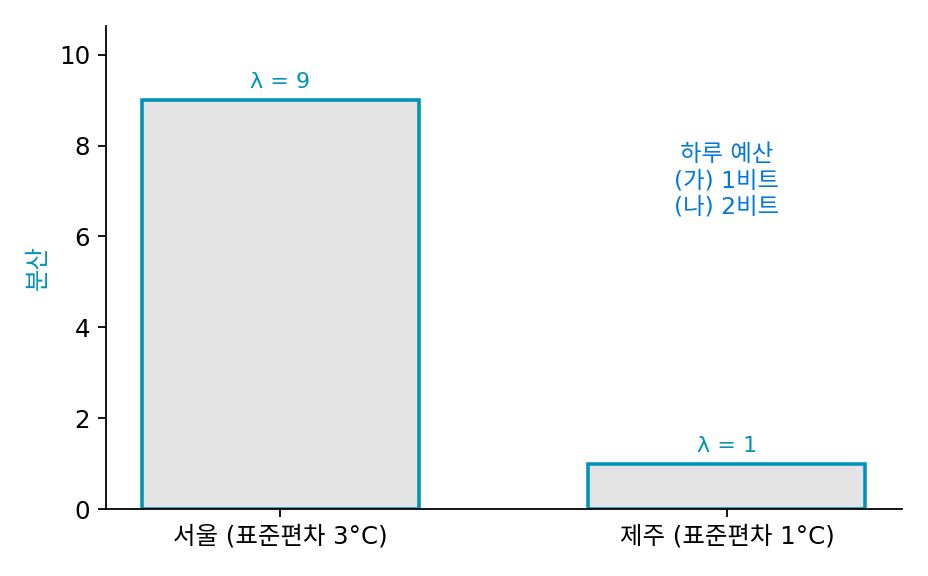
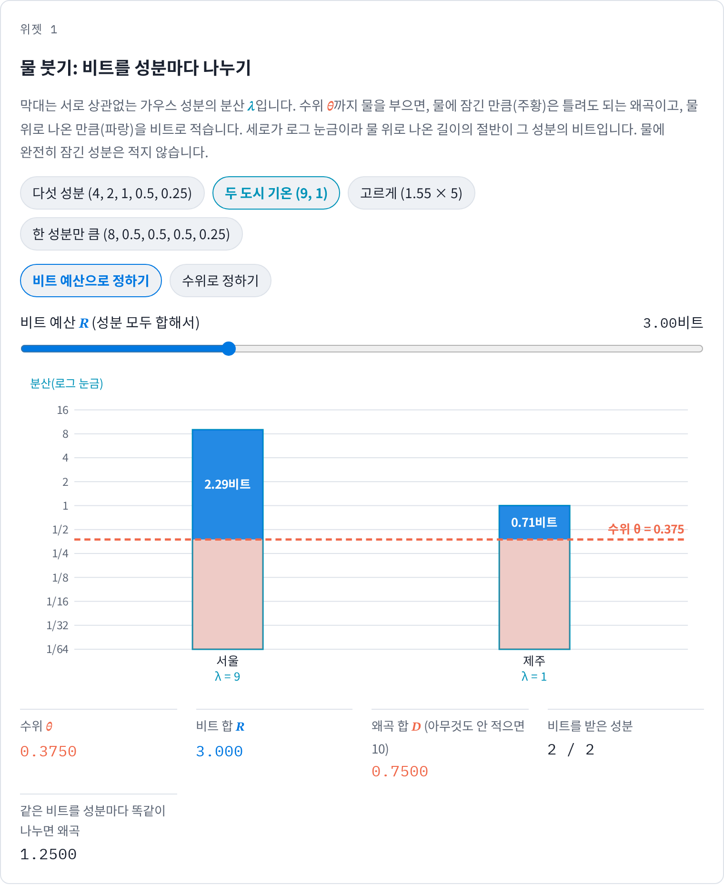
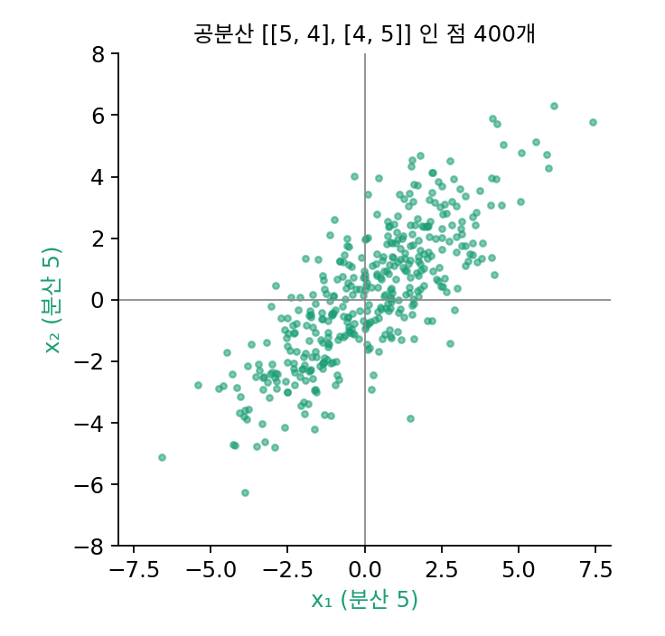
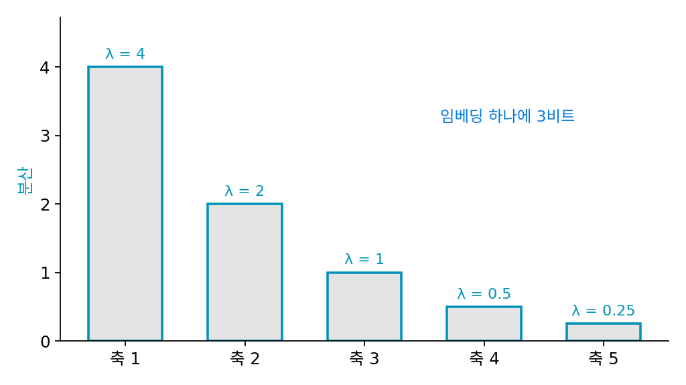
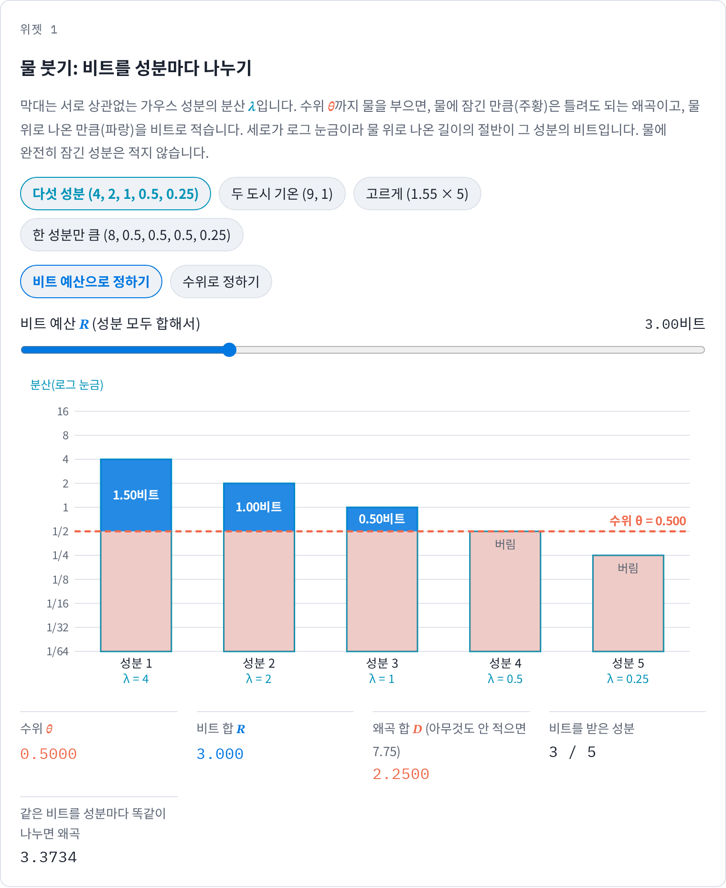

물 붓기: 비트는 분산이 큰 성분부터
수 하나를 적는 한계는 이제 알지만, 실제로 적어야 하는 것은 대개 수 여러 개다. 사진 한 장의 밝기 성분들, 임베딩 벡터의 칸들, 한 사람의 키와 몸무게처럼, 성분마다 퍼진 정도가 다르다. 비트 예산이 정해져 있을 때 모든 성분에 똑같이 나눠 줘야 할까, 크게 퍼진 성분에 더 줘야 할까? 거의 움직이지 않는 성분에도 비트를 줘야 할까?
역사: 묶어서 양자화하기
섀넌의 레이트–디스토션 이론이 나온 뒤, 1963년 황(J. J. Y. Huang)과 슐트하이스(P. M. Schultheiss)는 『IEEE Transactions on Communications Systems』에 「상관된 가우스 확률 변수의 블록 양자화(Block Quantization of Correlated Gaussian Random Variables)」를 실었다. 제목 그대로, 서로 얽혀 있는 수들을 하나씩 따로 양자화하지 않고 한 묶음으로 다루는 문제다. 서로 얽힌 수들을 먼저 상관없는 축으로 돌린 뒤 축마다 비트를 나눠 주는 방식은 오늘날 「변환 코딩(transform coding)」이라 불리고, JPEG 같은 영상 압축의 뼈대다. 정보 이론 교과서는 가우스 성분 여럿에 비트를 나누는 가장 좋은 답을 「거꾸로 물 붓기(reverse water-filling)」라는 그림으로 부른다.

얽힌 수를 상관없는 축으로 돌린 다음 적는다는 거, 주성분 분석 한 번이면 되잖아요. numpy 로 한 줄이에요.

그 한 줄에는 무엇이 필요하죠?

공분산 행렬을 구하고, 고유벡터를 구하고… 아, 공분산부터 알아야 하네요. 받는 쪽도 그 축을 알아야 되돌릴 수 있고요.
그래요. 공분산은 자료마다 달라서, 사진마다 축을 새로 구하면 축까지 함께 보내야 해요. 그래서 JPEG 는 사진마다 축을 구하지 않고 이산 코사인 변환이라는 정해진 축을 써요.

축을 돌린 뒤에도 걸리는 게 있어요. 축마다 비트를 「나눠 준다」는데, 대푯값 수는 2개, 4개처럼 정수잖아요. 1.5비트는 어떻게 주죠?

좋은 데를 짚었어요. 대푯값 수를 정수로 골라야 하는 실제 장치는 소수 비트를 그대로 쓸 수 없어요. 이 절에서는 성분마다 레이트–디스토션 함수의 한계까지 간다고 치고, 소수 비트를 허락한 채로 나눠 봐요.

그러면 분산이 서로 다른 성분 다섯에 3비트를 줄 때, 어느 성분에 얼마씩 주는 게 가장 좋을까요?
성분 다섯에 3비트
서로 상관없는 가우스 성분 다섯 개가 있고, 분산이 4, 2, 1, 0.5, 0.25 라고 하자. 아무것도 보내지 않고 받는 쪽이 모두 0 으로 답하면 왜곡은 분산의 합 7.75 다. 다섯 성분을 합쳐 3비트를 쓸 수 있을 때, 성분마다 레이트–디스토션 함수의 한계까지 간다고 치고 몇 가지로 나눠 보자(계산은 s3_water.py).
- 다섯 성분에 0.6비트씩 똑같이: 성분마다 왜곡이 분산 × 2^(−1.2) 가 되어, 합이 3.373 이다.
- 가장 큰 성분 하나에 3비트를 몰아서: 그 성분은 4 × 2^(−6) = 0.0625 로 거의 맞지만 나머지 넷의 분산 3.75 를 그대로 틀려서, 합이 3.813 이다.
한 성분에 모두 주기와 고르게 나누기 사이 어딘가에 답이 있어 보인다. 어디에 비트를 더 줄지를 따져 보자. 어느 성분에서든 반 비트를 더 쓰면 그 성분의 왜곡이 절반으로 준다. 같은 반 비트로 줄일 수 있는 왜곡은 그 성분에 지금 남아 있는 왜곡의 절반이니, 남은 왜곡이 가장 큰 성분에 비트를 주는 것이 가장 이득이다. 이렇게 하나씩 주다 보면 비트를 받은 성분들의 남은 왜곡이 모두 같은 높이로 맞춰진다. 그 높이보다 분산이 원래 작은 성분은 비트를 하나도 받지 못하고, 받는 쪽은 그 성분을 0 으로 둔다.
3비트에서는 그 높이가 0.5 다. 분산 4, 2, 1 인 성분이 각각 1.5, 1, 0.5비트를 받아 모두 0.5 만큼 틀리고, 분산 0.5 와 0.25 인 성분은 버린다. 왜곡의 합은 0.5 + 0.5 + 0.5 + 0.5 + 0.25 = 2.25 로, 앞의 어느 나눔보다 작다.
분산의 크기만큼 막대를 세워 놓고 그 위로 물을 붓는다고 생각하면 그림이 된다. 물이 높이 θ 까지 차면, 물에 잠긴 만큼은 틀려도 되는 왜곡이고, 물 위로 나온 만큼을 비트로 적는다. 완전히 잠긴 막대는 적지 않는다. 이렇게 모든 성분의 왜곡을 같은 수위 θ 에 맞추고 수위보다 작은 성분은 버리는 비트 나눔을 물 붓기 (분산이 큰 성분부터 비트를 주는 나눔, reverse water-filling)라 한다.
수위 θ 를 낮추면 비트가 늘고 왜곡이 준다. θ = 1 이면 비트 합 1.5, 왜곡 합 3.75 이고, θ = 0.25 이면 비트 합 5, 왜곡 합 1.25 다. 샘플 20만 개로 확인하면 3비트에서 성분별 왜곡이 0.497, 0.498, 0.500, 0.499, 0.250 으로 수위 0.5 에 맞는다.
버려지는 성분이 어느 것인지 보자. 분산이 가장 작은 것부터 물에 잠기는데, 주성분 분석이 분산이 큰 축 k 개를 남기고 작은 축을 버리던 것과 같은 순서다. 두 방법이 다른 곳은 남긴 성분이다. 주성분 분석은 남긴 축의 좌표를 그대로 두지만, 물 붓기는 남긴 성분마다 수위 θ 만큼의 오차를 허락하고 그만큼 비트를 아낀다. 성분들이 서로 얽혀 있으면 먼저 공분산의 고유벡터 축으로 돌려 서로 상관없게 만든 뒤 물을 붓는데, 그 축이 바로 주성분 축이다. 그래서 가우스 자료에서 비트를 가장 아끼며 버리는 법을 따라가면 주성분 분석과 같은 답이 나온다.
ML에서: 축까지 배우는 영상 압축기
JPEG 는 사진을 8 × 8 조각으로 잘라 정해진 축(이산 코사인 변환)으로 돌리고, 분산이 작은 높은 주파수 성분을 간격이 넓은 단계로 양자화한다. 손으로 정한 축 위에서 물 붓기를 하는 것과 같은 생각이다. 발레(Johannes Ballé)·라파라(Valero Laparra)·시몬첼리(Eero P. Simoncelli)의 「End-to-end Optimized Image Compression」(ICLR 2017)은 축을 정해 두지 않고 신경망으로 배웠다. 분석 변환(신경망) → 고른 간격의 양자화 → 합성 변환(신경망)을 이어 붙이고, 비트 수와 왜곡을 맞바꾸는 계수 하나를 둔 손실로 전체를 함께 학습시켰다. 논문은 이렇게 배운 압축기가 시험 사진에서 대체로 JPEG 와 JPEG 2000 보다 같은 비트에서 덜 틀린다고 보고했다. 그 계수를 바꾸면 레이트–디스토션 곡선 위의 다른 점을 고르는 압축기가 하나씩 나온다.
문제 4. 두 도시의 기온
서울과 제주의 오늘 기온이 평년보다 몇 도 다른지를 매일 보낸다. 두 값은 서로 상관없고, 서울은 분산 9(표준편차 3°C), 제주는 분산 1(표준편차 1°C)인 정규분포를 따른다고 하자. (가) 하루에 1비트를 쓸 수 있으면 두 도시에 어떻게 나눠야 하는가? 왜곡의 합은? (나) 2비트라면? (다) 제주가 비트를 조금이라도 받기 시작하는 예산은 몇 비트인가? (풀어 본 뒤 위젯 1의 「두 도시 기온 (9, 1)」로 확인해 보자.)

두 도시니까 반씩, 0.5비트씩이요. 그러면 서울은 9 × 2^(−1) = 4.5, 제주는 0.5, 합이 5 예요.
서울에 1비트를 다 주면 어떻게 돼요?
서울은 9/4 = 2.25 이고 제주는 그냥 1 만큼 틀리니까… 합이 3.25 네요. 제주를 버렸는데 더 나아요.

수위로 보면 돼. 서울에 1비트를 주면 서울의 남은 왜곡이 2.25 인데 제주의 분산 1 보다 아직 커. 수위가 제주 막대보다 높으니까 제주는 물에 잠긴 거야.
(나)는요?
수위를 θ 라 하면 서울이 ½ log₂(9/θ), 제주가 ½ log₂(1/θ) 를 받고 합이 2 여야 해요.
두 로그를 하나로 합치면요?
½ log₂(9/θ²) = 2 에서 θ² = 9/16, θ = 0.75.
그럼 서울 1.792비트, 제주 0.208비트이고, 둘 다 0.75 만큼 틀려서 합이 1.5 네요.

(다)는 수위가 제주 막대 꼭대기 1 까지 내려오는 순간이니까, 서울이 ½ log₂(9/1) = 1.585비트를 다 받은 다음부터 제주 차례네요.

미적분에서 제약 있는 최적화를 라그랑주 승수로 풀면 「한계 이득이 모든 변수에서 같아지는 곳」이 답이었어요. 수위가 같아진다는 게 그 말이었네요.
위젯 1에서 두 도시 설정을 불러와 비트 예산을 1, 2비트로 옮기며 수위가 제주 막대에 언제 닿는지 확인해 보세요.

문제 5. 상관된 두 수
두 수 (x₁, x₂) 의 공분산이 [[5, 4], [4, 5]] 다. (가) 두 칸에 비트를 반씩 나눠 따로 적으면, 예산 2비트에서 왜곡의 합은 얼마인가? (나) 더 잘하려면 무엇을 해야 하고, 그때 왜곡의 합은 얼마인가?

두 칸 다 분산이 5 니까 1비트씩 주면 5/4 + 5/4 = 2.5 예요. 분산이 같으니까 반씩 나누는 게 물 붓기로도 맞고요.
두 칸의 분산은 같아요. 그런데 두 수가 공분산 4 로 얽혀 있다는 건 쓰지 않았죠. x₁ 을 알면 x₂ 에 대해 무엇을 알게 되나요?
거의 같이 움직인다는 거예요. 그럼 칸을 그대로 두지 말고, 합 방향과 차 방향으로 돌려 보면 어떨까요?
돌린 축에서 분산은 얼마가 되죠?
고윳값을 구하면 9 와 1 이고 축은 (1, 1)/√2 와 (1, −1)/√2 예요.
어, 분산 9 와 1 이면 문제 4 의 서울(분산 9)과 제주(분산 1)랑 똑같아요. 그럼 2비트에서 왜곡 합이 1.5 예요. 돌리지 않았을 때의 2.5 보다 훨씬 작아요.

돌리기만 했는데 1 이 줄었네요. 같이 움직이는 부분을 두 번 적고 있었던 거예요. 합 방향 하나로 적으면 한 번이면 되니까요.
그래요. 돌린 축이 공분산의 고유벡터, 주성분 축이에요. 얽힌 수를 적을 때는 먼저 주성분 축으로 돌리고, 그다음에 물을 부어요.

조별 보고서에서 두 사람이 같은 내용을 따로 쓰면 분량만 늘잖아요. 겹치는 부분은 한 사람이 쓰고, 다른 사람은 다른 점만 쓰면 되는데요.
문제 6. 임베딩을 몇 차원까지 남길까
문장 임베딩을 주성분 축으로 돌렸더니 다섯 축의 분산이 4, 2, 1, 0.5, 0.25 였다. 저장 공간이 임베딩 하나에 3비트뿐이다. (가) 주성분 2개만 남기고 1.5비트씩 주면 왜곡의 합은? 3개를 남기고 1비트씩이면? (나) 물 붓기는 몇 축에 비트를 주는가? (다) 예산을 늘리면 넷째 축은 언제부터 비트를 받는가?

2개면 4/8 + 2/8 + 1 + 0.5 + 0.25 = 2.5, 3개면 4/4 + 2/4 + 1/4 + 0.75 = 2.5 로 같아요. 그럼 2개든 3개든 상관없네요.
두 나눔의 왜곡이 같다는 건, 둘 다 가장 좋은 나눔은 아닐 수 있다는 신호예요. 위젯 1에서 3비트를 넣어 보면 어때요?
분산이 4, 2, 1, 0.5, 0.25 면 성분 다섯에 3비트를 나누던 그 예제랑 똑같아요.
위젯은 몇 축에 얼마씩 주나요?
세 축에 1.5, 1, 0.5비트를 줘서 2.25 예요.
세 축을 쓰는 건 「3개 남기기」와 같은데, 비트를 똑같이 주지 않고 큰 축에 더 줬네요.
몇 축을 남길지와 남긴 축에 비트를 어떻게 나눌지가 따로따로가 아니네요. 수위 하나가 둘을 한꺼번에 정해요.
(다)는요?
넷째 축 분산이 0.5 니까 수위가 0.5 밑으로 내려가야 해요.
수위가 0.5 일 때 비트 합은 얼마였죠?

1.5 + 1 + 0.5… 마침 3이었어요. 그러니까 3비트를 넘는 순간부터 넷째 축이 비트를 받아요. 4비트면 넷째 축이 0.25비트를 받고요.
행렬의 랭크를 정하는 문제를 「특잇값이 문턱보다 큰 것만 남긴다」로 풀던 것과 비슷해요. 여기서는 문턱이 예산에 따라 저절로 정해져요.
